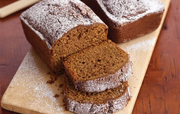

Gingerbread

Old Polish sayings connect Torun with making of some form of gingerbread, and the expansion of the craft, which started in the 13th century.
A considerable factor behind the development of gingerbread-making in Torun was its excellent location. Situated on high-quality soil, the area provided fine wheat for flour, while nearby villages provided honey. The necessary spices were brought from remote countries, mainly India, via a route through the Black Sea and Lwów to the Holy Roman Empire, where the spices were transported by north-German trade companies. Some also came by sea to the port of Danzig.
The very first mention of Torun gingerbread comes from 1380 and speaks of a local baker called Niclos Czana.[4] The product quickly gained fame across Poland and abroad. Torun and the city of Nuremberg, itself famous for special pancakes, were eager to protect the secrets of their recipes from each other.[5] Finally in 1556, they formed an agreement by which each city could bake the specialties of the other.
The artisans weren't the only ones engaged in the production of the delicacy. In the 16th century, the Cistercian Order on the outskirts of Torun prospered mainly due to this activity and even sold their product to other countries. During the 17th century, the well-known workshop of the Grauer family appeared. The city authorities were supportive of the lucrative trade and issued several tax breaks on spice imports and export by bakers' guilds so that the trade could be increased.
In the 18th and 19th century, the city saw a fall in baking and other craftsmanship. In 1825, only three bakers were left. With the advent of capitalism, large companies took over from the local craftsmen and mass production of the gingerbread ensued.